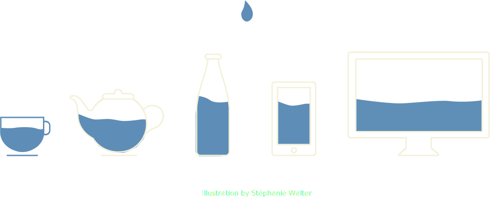

Be like water
Applying Bruce Lee's philosophy to web design
Bruce Lee

李小龍
“Be formless, shapeless, like water. Now you put water into a cup, it becomes the cup. You put water into a bottle, it becomes the bottle. You put it in a teapot, it becomes the teapot. Now water can flow, or it can crash. Be water, my friend.”
—Bruce Lee
Content is meant to flow



The “Blog” layout


The “Holy Grail” layout


The “Panel” layout


12 columns
Rectangles
Let's establish a new normal
“The hardest part is changing our thinking, not our CSS”
—Jen Simmons
State of Browsers (2017)


and many more...
CSS Layout Toolbox (2017)
- Feature queries
- Flexbox and Grid
- Writing mode
- Transforms
- Multicolumn
- Clip-path
- CSS shapes
- Viewport units
- Object-fit
- Media queries
- calc()
Flexbox and Grid
Based on the container-child relationship
Flexbox
Provides “simple and powerful tools for distributing space and aligning content in ways that web apps and complex web pages often need.”

Flexbox basics

Pumpkin by Yayoi Kusama
Flex shorthand
flex: initial |
flex: 0 1 auto, cannot grow but can shrink when there isn't enough space |
flex: auto |
flex: 1 1 auto, can grow and shrink to fit available space |
flex: none |
flex: 0 0 auto, cannot grow or shrink, AKA inflexible |
flex: <positive-number> |
flex: <positive-number> 1 0, can grow and shrink, extent of growth depends on flex factor |
Flexbox layouts


Feature Queries
.selector {
/* Styles that are supported in old browsers */
}
@supports (property:value) {
.selector {
/* Styles for browsers that support the specified property */
}
}“I imagined the web as an open platform that would allow everyone everywhere to share information, access opportunities and collaborate across geographic and cultural boundaries.”
—Sir Tim Berners-Lee
“It's the World Wide Web, not the Wealthy Western Web”
—Bruce Lawson
“We need to translate ideas that we find in other places, not transfer them.”
—Jen Simmons
A long list of references
- How Browsers Work: Behind the scenes of modern web browsers
- CSS Isn’t Black Magic
- A Quantum Leap for the Web
- Modernizing the DOM tree in Microsoft Edge
- Six Layout Myths Busted
- List of CSS properties, both proposed and standard
- CSS Inheritance, The Cascade And Global Scope: Your New Old Worst Best Friends
- 11 things I learned reading the flexbox spec